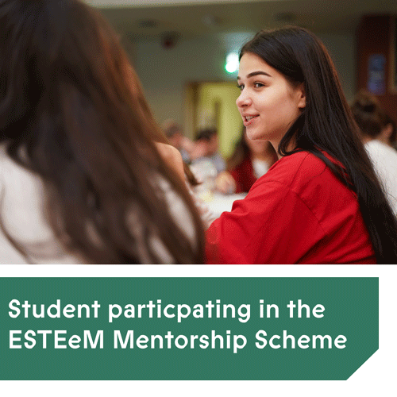

Salesforce to fund Saer Mentorship Programme

Salesforce has donated $300,000 to Technological University Dublin (TU Dublin) to support a pilot programme which aims to increase the participation of underrepresented groups in the Information and Communications and Technology sector in Ireland.
This announcement coincides with Salesforce’s celebration of its twentieth year in Ireland and sees them deepening their commitment to supporting Irish education with two new grants totalling $700K USD being given to Educate Together and TU Dublin. These grants will focus on increasing educational equity and by creating more diverse pathways into the technology sector.
For TU Dublin specifically this will be used to fund the Saer Mentoring Programme, which will assist 120 students in finding meaningful paid internships in ICT-related fields which will ultimately result in rewarding careers upon graduation from TU Dublin. The 120 students will be from groups that are traditionally underrepresented in the ICT sector, including women, those from areas of social disadvantage, and students with disabilities. Sixty trained industry mentors will support them.
While the numbers studying ICT courses has been rising over the last few years, the sector is grappling with persistent skills shortages and an ongoing diversity challenge. Ireland's digital workforce suffers from structural under-representation of women, with 80% of ICT specialists being men. In parallel, only 15% of new entrants to ICT programmes in Ireland in 2017/18 were women. People from lower-income households are also underrepresented, with only 10% of young people from disadvantaged communities entering Higher Education; in comparison, 82% of ICT specialists have an academic degree. The programme also hopes to increase the local talent-pool as just one in three of those working in ICT in Ireland are Irish-born, with the majority coming from other EU countries.
TU Dublin is the largest provider of ICT talent in Ireland and one of the largest in Europe. It has a strong reputation within the ICT industry, supporting over 150 students in securing internships each year while delivering a range of industry engagement activities to help them find employment after graduation. The University's work in addressing gender imbalance in Computer Science has also been internationally recognised, winning the Minerva Informatics Equality Award in 2019.
Welcoming the pledge, President of TU Dublin, Professor David FitzPatrick, said, "Narrowing the gender gap in ICT is a critical mission for TU Dublin while a central tenet of the University's Strategic Plan is to expand our access programmes to widen the participation of groups such as people with disabilities and ethnic minorities such as Irish travellers and Roma people in Higher Education. Today's generous announcement by Salesforce will also support the creation of local talent-pools; Salesforce Tower Dublin is located on the North Dock in Dublin 1, a location where just over 1 in 5 progress to Higher Education and it is heartening to consider that school children that walk by the Salesforce Tower might one day take on senior positions in that very building."
Speaking about the pilot project, Dr Deirdre Lillis, Head, School of Computer Science at TU Dublin – City Campus, said, "Saer takes its inspiration from the old Gaelic tradition of learning from a master craftsperson. It connects students with accessible role models in the industry who will mentor them through their key transition from Higher Education to early-career employment, and we are very grateful to Salesforce for its support. Having surmounted the first hurdle of access to University, students from underrepresented groups often encounter additional barriers accessing high-quality careers, such as limited social capital and access to professional networks. Saer addresses this by connecting students with industry mentors early in their educational journey. A key feature of Saer is that it raises awareness amongst all students of the need for inclusive learning and working environments."
The programme, which will be anchored by Dr Lillis and Computer Science colleagues across TU Dublin, builds on the successful ESTeEM mentoring initiative run by Leslie Shoemaker and the Industry Engagement Office in TU Dublin Computer Science run by Iseult Kelly which places over 150 interns per annum. The team was also responsible for securing a Professorship of Inclusive Computer Science Education which is designed to address gender diversity in the field of computer science education and industry.
"Giving back to support the communities that we live and work in has been part of our DNA since inception," said Dr David Dempsey, Country Leader and General Manager, Salesforce Ireland. "Today's investment reflects our longstanding commitment and our vision for the future: a more inclusive economy in which all young people—particularly those from underrepresented and underserved groups—have the skills, mentorship, and opportunities they need to reach their full potential."